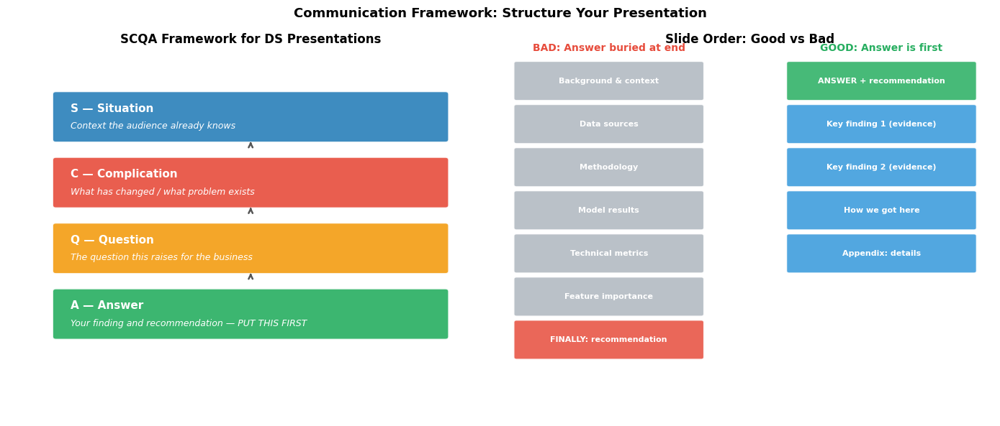
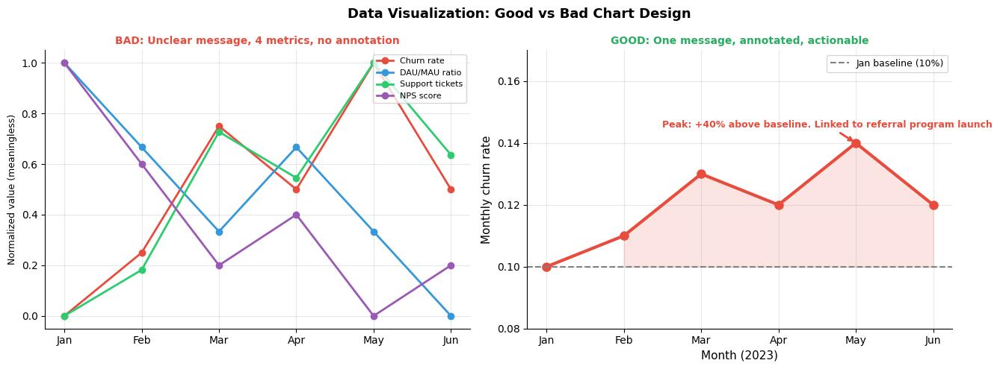
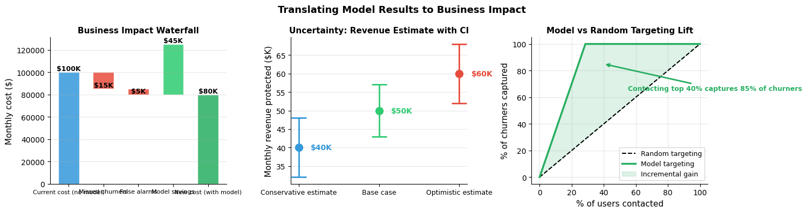
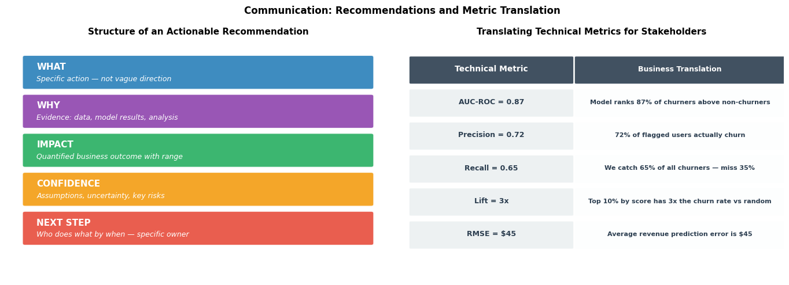

How do you communicate findings to stakeholders?#
Topics: SCQA Framework · Lead with the Answer · Business Translation · Good vs Bad Charts · Handling Pushback · Actionable Recommendations
1. Structuring a Findings Presentation#
SCQA Framework#
Situation — context the audience already knows
Complication — what has changed or what problem exists
Question — the question this raises
Answer — your finding or recommendation — always lead with this
Example:
Situation: Monthly churn has been stable at 8% for 6 months
Complication: In Q3 it jumped to 12% — that is 400 extra lost users per month
Question: Why is this happening and what should we do?
Answer: Churn is concentrated in referral-program users with fewer than 5 logins in month 1. Fixing onboarding for this segment could recover 60% of the increase
Lead with the answer — always#
Do not make stakeholders sit through methodology before the finding
First slide: the answer. Then: evidence. Then: recommendation
A 50-slide deck that buries the recommendation on slide 48 is a failed communication
Gotchas#
Stakeholders have limited attention — assume 5 minutes
Do not show every analysis you ran — only what supports the conclusion
Passive voice hides accountability: say who will do what by when
import matplotlib.pyplot as plt
import matplotlib.patches as mpatches
import numpy as np
fig, axes = plt.subplots(1, 2, figsize=(14, 6))
# ── SCQA Diagram ──
ax = axes[0]
ax.set_xlim(0, 10); ax.set_ylim(0, 9); ax.axis('off')
ax.set_title('SCQA Framework for DS Presentations', fontsize=12, fontweight='bold')
scqa_items = [
(1.0, 6.8, 'S — Situation', 'Context the audience already knows', '#2980B9'),
(1.0, 5.2, 'C — Complication', 'What has changed / what problem exists', '#E74C3C'),
(1.0, 3.6, 'Q — Question', 'The question this raises for the business', '#F39C12'),
(1.0, 2.0, 'A — Answer', 'Your finding and recommendation — PUT THIS FIRST', '#27AE60'),
]
for x, y, title, desc, color in scqa_items:
rect = mpatches.FancyBboxPatch((x, y), 8.0, 1.1,
boxstyle='round,pad=0.07', facecolor=color, edgecolor='white', linewidth=1.5, alpha=0.9)
ax.add_patch(rect)
ax.text(x + 0.3, y + 0.75, title, va='center', fontsize=11, fontweight='bold', color='white')
ax.text(x + 0.3, y + 0.32, desc, va='center', fontsize=9, color='white', style='italic')
if y > 2.0:
ax.annotate('', xy=(5.0, y), xytext=(5.0, y - 0.15),
arrowprops=dict(arrowstyle='->', color='#555', lw=1.8))
# ── Good vs Bad Presentation Structure ──
ax2 = axes[1]
ax2.set_xlim(0, 10); ax2.set_ylim(0, 9); ax2.axis('off')
ax2.set_title('Slide Order: Good vs Bad', fontsize=12, fontweight='bold')
bad_slides = [
'Background & context',
'Data sources',
'Methodology',
'Model results',
'Technical metrics',
'Feature importance',
'FINALLY: recommendation',
]
good_slides = [
'ANSWER + recommendation',
'Key finding 1 (evidence)',
'Key finding 2 (evidence)',
'How we got here',
'Appendix: details',
]
for i, slide in enumerate(bad_slides):
color = '#E74C3C' if i == len(bad_slides) - 1 else '#AEB6BF'
rect = mpatches.FancyBboxPatch((0.2, 7.8 - i * 1.05), 3.8, 0.85,
boxstyle='round,pad=0.05', facecolor=color, edgecolor='white', linewidth=1, alpha=0.85)
ax2.add_patch(rect)
ax2.text(2.1, 8.22 - i * 1.05, slide, ha='center', va='center',
fontsize=8, color='white', fontweight='bold')
for i, slide in enumerate(good_slides):
color = '#27AE60' if i == 0 else '#3498DB'
rect = mpatches.FancyBboxPatch((5.8, 7.8 - i * 1.05), 3.8, 0.85,
boxstyle='round,pad=0.05', facecolor=color, edgecolor='white', linewidth=1, alpha=0.85)
ax2.add_patch(rect)
ax2.text(7.7, 8.22 - i * 1.05, slide, ha='center', va='center',
fontsize=8, color='white', fontweight='bold')
ax2.text(2.1, 8.95, 'BAD: Answer buried at end', ha='center',
fontsize=10, fontweight='bold', color='#E74C3C')
ax2.text(7.7, 8.95, 'GOOD: Answer is first', ha='center',
fontsize=10, fontweight='bold', color='#27AE60')
plt.suptitle('Communication Framework: Structure Your Presentation', fontsize=13, fontweight='bold')
plt.tight_layout()
plt.savefig('communication_structure.png', dpi=120, bbox_inches='tight')
plt.show()

2. Translating Technical Results to Business Impact#
The translation rule#
Never report a technical metric without its business meaning
The audience cannot act on AUC — they can act on revenue, cost, or users saved
Translation examples#
Technical metric |
Business translation |
|---|---|
AUC = 0.87 |
Model correctly ranks 87% of churners above non-churners |
Precision = 0.72 |
72% of users we flag as churning actually do churn |
Recall = 0.65 |
We catch 65% of all churning users |
RMSE = $45 |
On average we predict revenue within $45 of actual |
Lift = 3x in top decile |
Targeting top 10% by score gives 3x the churn rate vs random |
Business impact framing#
Connect improvement to revenue: ‘A 5pp recall improvement saves 200 users/month at \(50 LTV = \)10,000/month’
Show ROI: ‘Model-driven targeting costs \(2/user vs \)10 for blanket discount — 80% cost saving’
Use ranges, not point estimates: ‘We estimate 8–12% churn reduction (95% CI), protecting \(40K–\)60K monthly’
Handling pushback#
Pushback |
Response |
|---|---|
‘Why was the model wrong about X?’ |
‘Here are conditions where it underperforms — we monitor for this’ |
‘Can we trust this?’ |
‘Validated on held-out data, consistent across subgroups’ |
‘The model seems too simple’ |
‘We compared against more complex models — similar performance, more maintainable’ |
‘What if the data is wrong?’ |
‘Here is how we validated data quality before modeling’ |
Gotchas#
Be honest about uncertainty — overpromising destroys trust permanently
Give the range, not just the point estimate — ‘between \(40K and \)60K’
‘We need more data’ is almost never a complete recommendation — quantify what, when, and the cost of waiting
import matplotlib.pyplot as plt
import numpy as np
fig, axes = plt.subplots(1, 2, figsize=(14, 5))
# ── BAD chart: too much, no message ──
np.random.seed(42)
months = ['Jan', 'Feb', 'Mar', 'Apr', 'May', 'Jun']
metrics = {
'Churn rate' : [0.10, 0.11, 0.13, 0.12, 0.14, 0.12],
'DAU/MAU ratio' : [0.45, 0.44, 0.43, 0.44, 0.43, 0.42],
'Support tickets': [120, 130, 160, 150, 175, 155],
'NPS score' : [42, 40, 38, 39, 37, 38],
}
ax_bad = axes[0]
colors_bad = ['#E74C3C', '#3498DB', '#2ECC71', '#9B59B6']
for (name, vals), color in zip(metrics.items(), colors_bad):
norm = (np.array(vals) - min(vals)) / (max(vals) - min(vals) + 1e-8)
ax_bad.plot(months, norm, marker='o', linewidth=2, color=color, label=name)
ax_bad.legend(fontsize=8, loc='upper right')
ax_bad.grid(True, alpha=0.3)
ax_bad.set_ylabel('Normalized value (meaningless)', fontsize=9)
ax_bad.set_title('BAD: Unclear message, 4 metrics, no annotation', fontsize=10,
fontweight='bold', color='#E74C3C')
ax_bad.spines['top'].set_visible(False); ax_bad.spines['right'].set_visible(False)
# ── GOOD chart: one message, annotated, actionable ──
ax_good = axes[1]
churn = [0.10, 0.11, 0.13, 0.12, 0.14, 0.12]
ax_good.plot(months, churn, color='#E74C3C', linewidth=3, marker='o', markersize=8)
ax_good.fill_between(range(len(months)), churn, 0.10,
where=[c > 0.10 for c in churn],
alpha=0.15, color='#E74C3C')
ax_good.axhline(0.10, color='gray', linewidth=1.5, linestyle='--', label='Jan baseline (10%)')
ax_good.annotate(
'Peak: +40% above baseline. Linked to referral program launch',
xy=(4, 0.14), xytext=(1.5, 0.145),
arrowprops=dict(arrowstyle='->', color='#E74C3C', lw=2),
fontsize=9, color='#E74C3C', fontweight='bold'
)
ax_good.set_title('GOOD: One message, annotated, actionable', fontsize=10,
fontweight='bold', color='#27AE60')
ax_good.set_ylabel('Monthly churn rate', fontsize=11)
ax_good.set_xlabel('Month (2023)', fontsize=11)
ax_good.legend(fontsize=9)
ax_good.grid(True, alpha=0.3)
ax_good.set_ylim(0.08, 0.17)
ax_good.spines['top'].set_visible(False); ax_good.spines['right'].set_visible(False)
plt.suptitle('Data Visualization: Good vs Bad Chart Design', fontsize=13, fontweight='bold')
plt.tight_layout()
plt.savefig('good_vs_bad_chart.png', dpi=120, bbox_inches='tight')
plt.show()

3. Visualizing Business Impact#
Connecting model metrics to revenue#
Frame everything in terms of the decision the model enables
Show the cost of the status quo vs the proposed approach
Use a simple 2x2 or waterfall chart — not a confusion matrix
Uncertainty communication#
Always show confidence intervals — a point estimate without uncertainty misleads
For executives: use a range in words — ‘between \(40K and \)60K’
For analysts: show the CI chart with the distribution of outcomes
Gotchas#
Pie charts are almost always worse than bar charts — avoid
Dual-axis charts mislead — the scale relationship is arbitrary
Color should encode meaning — red = bad, green = good, gray = neutral
Always label axes and include units — never make the reader guess
import matplotlib.pyplot as plt
import numpy as np
fig, axes = plt.subplots(1, 3, figsize=(15, 4))
# ── Waterfall: business impact ──
categories = ['Current cost (no model)', 'Missed churners', 'False alarms', 'Model savings', 'New cost (with model)']
values = [100000, -15000, -5000, 45000, 0]
cumulative = [100000, 85000, 80000, 125000, 80000]
bottoms = [0, 85000, 80000, 80000, 0]
colors_wf = ['#3498DB', '#E74C3C', '#E74C3C', '#2ECC71', '#27AE60']
bars = axes[0].bar(categories, [abs(v) if v != 0 else cumulative[i]
for i, v in enumerate(values)],
bottom=bottoms, color=colors_wf, alpha=0.85, edgecolor='white', width=0.6)
axes[0].set_ylabel('Monthly cost ($)', fontsize=11)
axes[0].set_title('Business Impact Waterfall', fontsize=11, fontweight='bold')
axes[0].grid(True, alpha=0.3, axis='y')
axes[0].tick_params(axis='x', labelsize=8)
axes[0].spines['top'].set_visible(False); axes[0].spines['right'].set_visible(False)
for i, (cat, val, cum) in enumerate(zip(categories, values, cumulative)):
label = f'${abs(val)/1000:.0f}K' if val != 0 else f'${cum/1000:.0f}K'
axes[0].text(i, cum + 1500, label, ha='center', fontsize=9, fontweight='bold')
# ── Confidence interval chart ──
scenarios = ['Conservative estimate', 'Base case', 'Optimistic estimate']
point_ests = [40000, 50000, 60000]
ci_lows = [32000, 43000, 52000]
ci_highs = [48000, 57000, 68000]
colors_ci = ['#3498DB', '#2ECC71', '#E74C3C']
for i, (label, est, lo, hi, color) in enumerate(
zip(scenarios, point_ests, ci_lows, ci_highs, colors_ci)):
axes[1].errorbar(i, est / 1000,
yerr=[[( est - lo) / 1000],
[(hi - est) / 1000]],
fmt='o', color=color, capsize=10, capthick=2,
markersize=10, linewidth=2, label=label)
axes[1].set_xticks(range(len(scenarios)))
axes[1].set_xticklabels(scenarios, fontsize=9)
axes[1].set_ylabel('Monthly revenue protected ($K)', fontsize=11)
axes[1].set_title('Uncertainty: Revenue Estimate with CI', fontsize=11, fontweight='bold')
axes[1].grid(True, alpha=0.3, axis='y')
axes[1].spines['top'].set_visible(False); axes[1].spines['right'].set_visible(False)
for i, (est, color) in enumerate(zip(point_ests, colors_ci)):
axes[1].text(i + 0.15, est / 1000, f'${est/1000:.0f}K', va='center', fontsize=10, color=color, fontweight='bold')
# ── Uplift: model vs random targeting ──
fractions = np.linspace(0, 1, 50)
random_lift = fractions
model_lift = np.where(fractions < 0.4,
np.minimum(fractions * 3.5, 1),
np.minimum(0.4 * 3.5 + (fractions - 0.4) * 0.5, 1))
axes[2].plot(fractions * 100, random_lift * 100, 'k--', linewidth=1.5, label='Random targeting')
axes[2].plot(fractions * 100, model_lift * 100, color='#27AE60', linewidth=2.5, label='Model targeting')
axes[2].fill_between(fractions * 100, random_lift * 100, model_lift * 100,
alpha=0.15, color='#27AE60', label='Incremental gain')
axes[2].set_xlabel('% of users contacted', fontsize=11)
axes[2].set_ylabel('% of churners captured', fontsize=11)
axes[2].set_title('Model vs Random Targeting Lift', fontsize=11, fontweight='bold')
axes[2].legend(fontsize=9)
axes[2].grid(True, alpha=0.3)
axes[2].spines['top'].set_visible(False); axes[2].spines['right'].set_visible(False)
axes[2].annotate('Contacting top 40% captures 85% of churners', xy=(40, 85),
xytext=(55, 65),
arrowprops=dict(arrowstyle='->', color='#27AE60', lw=2),
fontsize=9, color='#27AE60', fontweight='bold')
plt.suptitle('Translating Model Results to Business Impact', fontsize=13, fontweight='bold')
plt.tight_layout()
plt.savefig('business_impact.png', dpi=120, bbox_inches='tight')
plt.show()

4. Making Actionable Recommendations#
Structure of a good recommendation#
What: specific action — not ‘investigate further’
Why: evidence that supports it
Impact: expected business outcome, quantified
Confidence: how certain, what assumptions
Next step: who does what by when
Bad recommendation#
‘The model shows some users are at risk of churning. We should look into this more.’
Good recommendation#
‘Users with fewer than 3 logins in their first 2 weeks have 3x higher 90-day churn (n=1,200/month). We recommend an automated onboarding nudge for this segment. Based on similar past interventions, we expect 15–25% churn reduction in this cohort, protecting \(18K–\)30K monthly revenue. Owner: product team. Timeline: scoped within 2 weeks, shipped within 6.’
Interview Q&A#
How do you present results to a non-technical executive?
No model metrics — only business outcomes
One page: what we found, what it means, what we recommend
Bring backup slides for detailed questions — do not lead with them
What do you do when your finding contradicts what the stakeholder expected?
Present the finding clearly — do not soften it
Show the evidence thoroughly and anticipate skeptical questions
Acknowledge what might explain the discrepancy
Offer to investigate their specific concern further
How do you handle a request to ‘just make the model show X’?
Explain that the model reflects the data — it cannot be tuned to a predetermined conclusion
Offer to investigate whether X could be correct and what evidence would support it
Document the request and your response
Gotchas#
‘We need more data’ is almost never a complete answer — quantify what data, what it enables, and the cost of waiting
Always end with a clear next step — who, what, when
Never use passive voice: ‘the model should be monitored’ vs ‘data team monitors weekly starting Monday’
import matplotlib.pyplot as plt
import matplotlib.patches as mpatches
import numpy as np
fig, axes = plt.subplots(1, 2, figsize=(14, 5))
# ── Recommendation structure diagram ──
ax = axes[0]
ax.set_xlim(0, 10); ax.set_ylim(0, 8); ax.axis('off')
ax.set_title('Structure of an Actionable Recommendation', fontsize=11, fontweight='bold')
components = [
(0.5, 6.4, 'WHAT', 'Specific action — not vague direction', '#2980B9'),
(0.5, 5.1, 'WHY', 'Evidence: data, model results, analysis', '#8E44AD'),
(0.5, 3.8, 'IMPACT', 'Quantified business outcome with range', '#27AE60'),
(0.5, 2.5, 'CONFIDENCE', 'Assumptions, uncertainty, key risks', '#F39C12'),
(0.5, 1.2, 'NEXT STEP', 'Who does what by when — specific owner', '#E74C3C'),
]
for x, y, label, desc, color in components:
rect = mpatches.FancyBboxPatch((x, y), 9.0, 1.0,
boxstyle='round,pad=0.07', facecolor=color, edgecolor='white', linewidth=1.5, alpha=0.9)
ax.add_patch(rect)
ax.text(x + 0.3, y + 0.68, label, va='center', fontsize=11, fontweight='bold', color='white')
ax.text(x + 0.3, y + 0.28, desc, va='center', fontsize=9, color='white', style='italic')
# ── Metric translation matrix ──
ax2 = axes[1]
ax2.set_xlim(0, 10); ax2.set_ylim(0, 8); ax2.axis('off')
ax2.set_title('Translating Technical Metrics for Stakeholders', fontsize=11, fontweight='bold')
translations = [
('Technical Metric', 'Business Translation', '#2C3E50', '#2C3E50'),
('AUC-ROC = 0.87', 'Model ranks 87% of churners above non-churners', '#8E44AD', '#9B59B6'),
('Precision = 0.72', '72% of flagged users actually churn', '#2980B9', '#3498DB'),
('Recall = 0.65', 'We catch 65% of all churners — miss 35%', '#E67E22', '#F39C12'),
('Lift = 3x', 'Top 10% by score has 3x the churn rate vs random', '#27AE60', '#2ECC71'),
('RMSE = $45', 'Average revenue prediction error is $45', '#C0392B', '#E74C3C'),
]
col_w = [4.2, 5.4]
for i, (tech, biz, c_dark, c_light) in enumerate(translations):
y = 7.0 - i * 1.1
is_header = i == 0
fs = 9 if not is_header else 10
fw = 'bold'
rect1 = mpatches.FancyBboxPatch((0.3, y - 0.45), col_w[0], 0.85,
boxstyle='round,pad=0.04', facecolor=c_dark if is_header else '#ECF0F1',
edgecolor='white', linewidth=1, alpha=0.9)
rect2 = mpatches.FancyBboxPatch((0.3 + col_w[0] + 0.1, y - 0.45), col_w[1], 0.85,
boxstyle='round,pad=0.04', facecolor=c_light if is_header else '#FDFEFE',
edgecolor='white', linewidth=1, alpha=0.9)
ax2.add_patch(rect1); ax2.add_patch(rect2)
tc = 'white' if is_header else '#2C3E50'
ax2.text(0.3 + col_w[0] / 2, y, tech, ha='center', va='center', fontsize=fs, fontweight=fw, color=tc)
ax2.text(0.3 + col_w[0] + 0.1 + col_w[1] / 2, y, biz, ha='center', va='center', fontsize=fs - 1, fontweight=fw, color=tc)
plt.suptitle('Communication: Recommendations and Metric Translation', fontsize=12, fontweight='bold')
plt.tight_layout()
plt.savefig('recommendation_framework.png', dpi=120, bbox_inches='tight')
plt.show()
print("Communication framework diagrams complete.")

Communication framework diagrams complete.